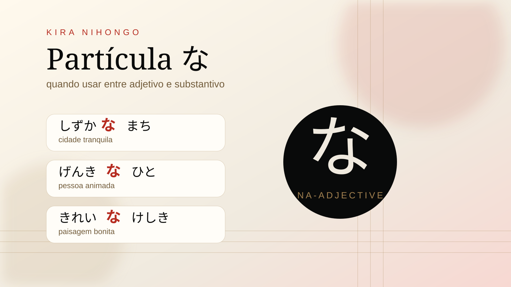

O な aparece quando certos adjetivos vêm diretamente antes de um substantivo. Em japonês, esse grupo é chamado de adjetivos do tipo な, ou adjetivos-na.
A regra principal
Use な entre o adjetivo-na e o substantivo que ele descreve.
しずかなまち
shizuka na machi
cidade tranquila
げんきなひと
genki na hito
pessoa animada ou saudável
きれいなけしき
kirei na keshiki
paisagem bonita
Por que きれい usa な?
きれい termina com som de "i", mas não é adjetivo-i. É adjetivo-na. Por isso dizemos きれいなけしき.
Antes de です, não coloque な
Correto: このまちはしずかです。
Kono machi wa shizuka desu.
Esta cidade é tranquila.
Incorreto: しずかなです。
Fórmula resumida
- Adjetivo-na + な + substantivo: しずかなまち
- Adjetivo-na + です: このまちはしずかです。
Exercício
Complete: ゆうめい___ばしょ
yumei ___ basho
lugar famoso
Resposta: ゆうめいなばしょ.